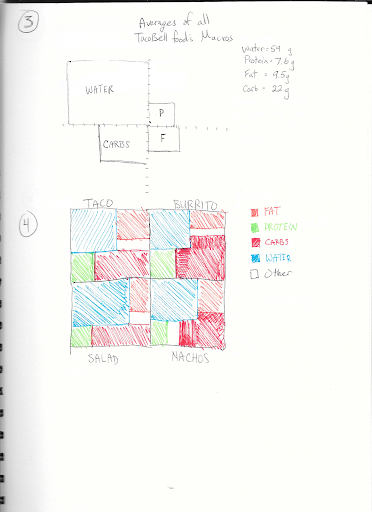
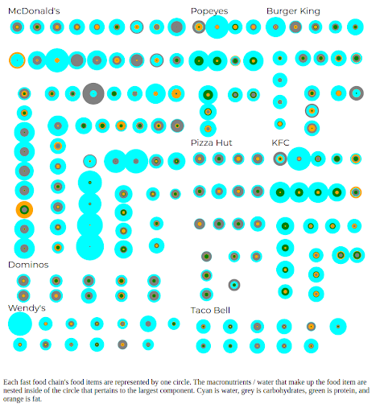
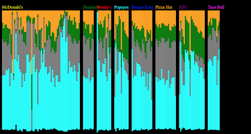
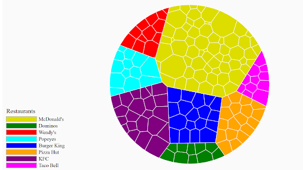
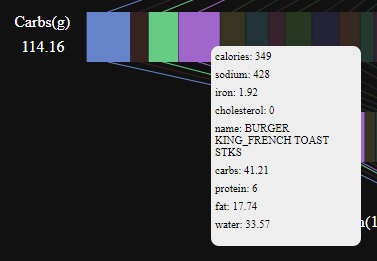

Data Visualization of Macro-nutrients in Fast Food
Objective
We wanted to create a visualization to help the user choose the healthiest fast food options. We all know fast food isn't good for us, but we continue to eat it anyway, and so harm reduction in this sphere has a valuable role. Our set of requirements was that we should be able to visually compare nutritional contents between specific "meals"(collection of selected food items) at the same or different restaurants.
My Role
This project was completed by me and two other group members. We all took part evenly in the prototyping process, and selecting which designs to go forward with. The final implementation was largely completed by myself (given the barriers of collaboration during quarantine), with the collection and referencing of icons done by my team members.
Technologies
- HTML / CSS
- JavaScript
- D3
Process
We began our design process by sketching, and decided to move forward on a visualization that resembles a tree map.
From here we started creating a handful of variants with D3 that worked with the entire data set.
 The visualization above was the inspiration for the final project.
This circular treemap was my personal favorite, I'm interested in perhaps utilizing this visualization scheme on another data set.
Outcome
Though there is definitely a lack of aesthetic polish to this visualization, I think this solution had a wide range of intuitive interactions that met our goals. The visualization consists of each food item having a representative rectangle on each of the four macro-nutrient bars. The user can hover over each rectangle or corresponding icon below to get more info about the specific food item.
There are many ways to select items, the user can toggle click a specific item to select and deselect it. This selection is additive, and subsequent selections can be made. The respective macro-nutrient quantities are described in their appropriate units at the end of each bar. For convenience there are also select all and clear buttons.

The user also has the ability to zoom and pan each of the two canvases around so they can select the smaller rectangles easily. Overall i'm quite happy with the feature set of the project. I would have preferred the visuals to have been based off the circular treemap prototype, but the connected stacked bars have great visual appeal as well.